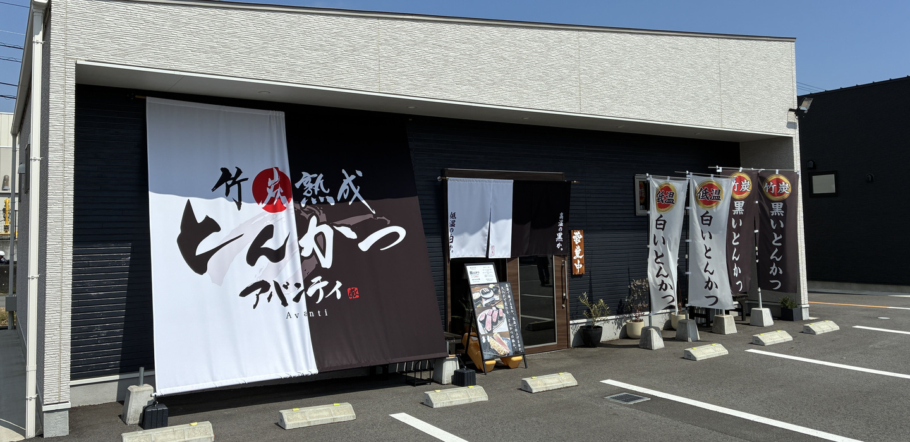
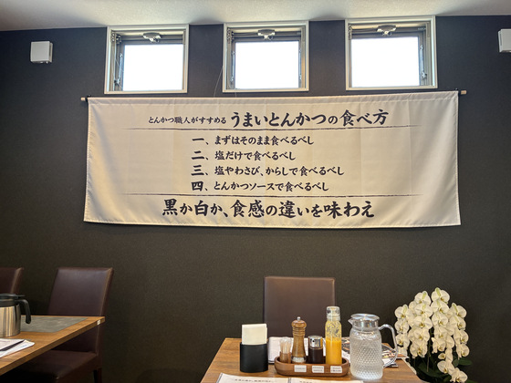
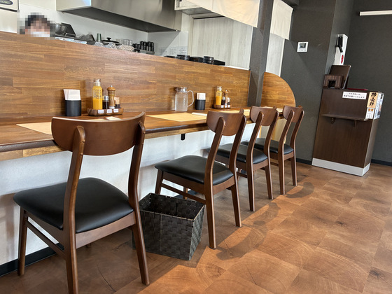
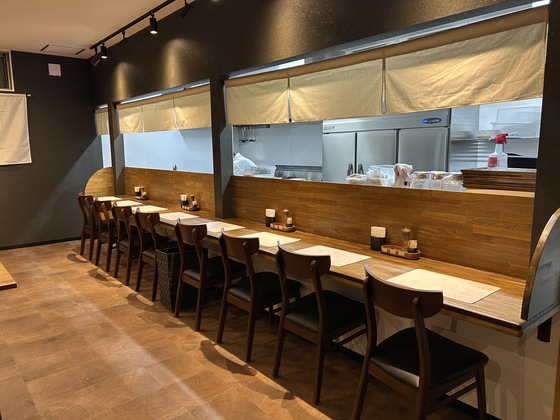
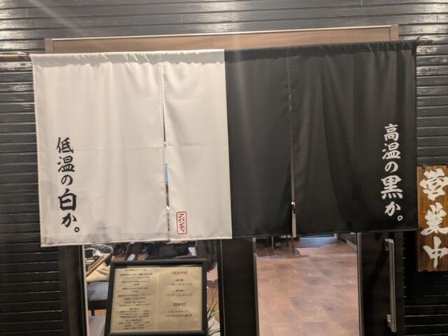
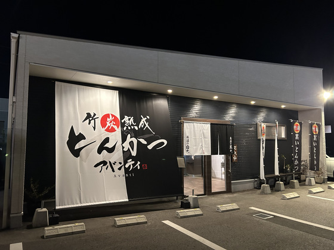

店舗情報
白も、黒も。
一膳で食べ比べ。
フードパークこむぎむらの中。パーク内の共用駐車場が使えます。カウンター8席、テーブル16席。全席禁煙です。
お知らせ





- 住所
- 〒515-2115 三重県松阪市中道町530-4 フードパークこむぎむら7号地
- 電話番号
- 0598-30-4330
- 営業時間
- ランチ 11:00〜14:00 L.O.／ディナー 18:00〜20:30 L.O.（営業日は Instagram のハイライトでお知らせしています）
- 席
- 24席（カウンター8席、テーブル16席）。全席禁煙
- 駐車場
- フードパークこむぎむらの共用駐車場（約100台）
- お支払い
- 現金（カード・電子マネー・QRコード決済は使えません）
- 開店
- 2026年2月10日